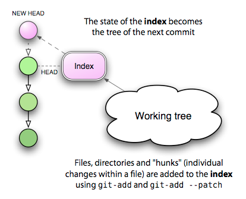

The Index: Meet the middle man
Between your data files, which are stored on the filesystem, and your Git blobs, which are stored in the repository, there stands a somewhat strange entity: the Git index. Part of what makes this beast hard to understand is that it’s got a rather unfortunate name. It’s an index in the sense that it refers to the set of newly created trees and blobs which you created by running add. These new objects will soon get bound into a new tree for the purpose of committing to your repository — but until then, they are only referenced by the index. That means that if you unregister a change from the index with reset, you’ll end up with an orphaned blob that will get deleted at some point at the future.
The index is really just a staging area for your next commit, and there’s a good reason why it exists: it supports a model of development that may be foreign to users of CVS or Subversion, but which is all too familiar to Darcs users: the ability to build up your next commit in stages.

First, let me say that there is a way to ignore the index almost entirely: by passing the -a flag to commit. Look at the way Subversion works, for example. When you type svn status, what you’ll see is a list of actions to be applied to your repository on the next call to svn commit. In a way, this “list of next actions” is a kind of informal index, determined by comparing the state of your working tree with the state of HEAD. If the file foo.c has been changed, on your next commit those changes will be saved. If an unknown file has a question mark next to it, it will be ignored; but a new file which has been added with svn add will get added to the repository.
This is no different from what happens if you use commit -a: new, unknown files are ignored, but new files which have been added with add are added to the repository, as are any changes to existing files. This interaction is nearly identical with the Subversion way of doing things.
The real difference is that in the Subversion case, your “list of next actions” is always determined by looking at the current working tree. In Git, the “list of next actions” is the contents of the index, which represents what will become the next state of HEAD, and that you can manipulate directly before executing commit. This gives you an extra layer of control over what’s going to happen, by allowing you to stage those changes in advance.
If this isn’t clear yet, consider the following example: you have a trusty source file, foo.c, and you’ve made two sets of unrelated changes to it. What you’d like to do is to tease apart these changes into two different commits, each with its own description. Here’s how you’d do this in Subversion:
$ svn diff foo.c > foo.patch $ vi foo.patch <edit foo.patch, keeping the changes I want to commit later> $ patch -p1 -R < foo.patch # remove the second set of changes $ svn commit -m "First commit message" $ patch -p1 < foo.patch # re-apply the remaining changes $ svn commit -m "Second commit message"
Sounds like fun? Now repeat that many times over for a complex, dynamic set of changes. Here’s the Git version, making use of the index:
$ git add --patch foo.c <select the hunks I want to commit first> $ git commit -m "First commit message" $ git add foo.c # add the remaining changes $ git commit -m "Second commit message"
What’s more, it gets even easier! If you like Emacs, the superlative tool gitsum.el, by Christian Neukirchan, puts a beautiful face on this potentially tedious process. I recently used it to tease apart 11 separate commits from a set of conflated changes. Thank you, Christian!